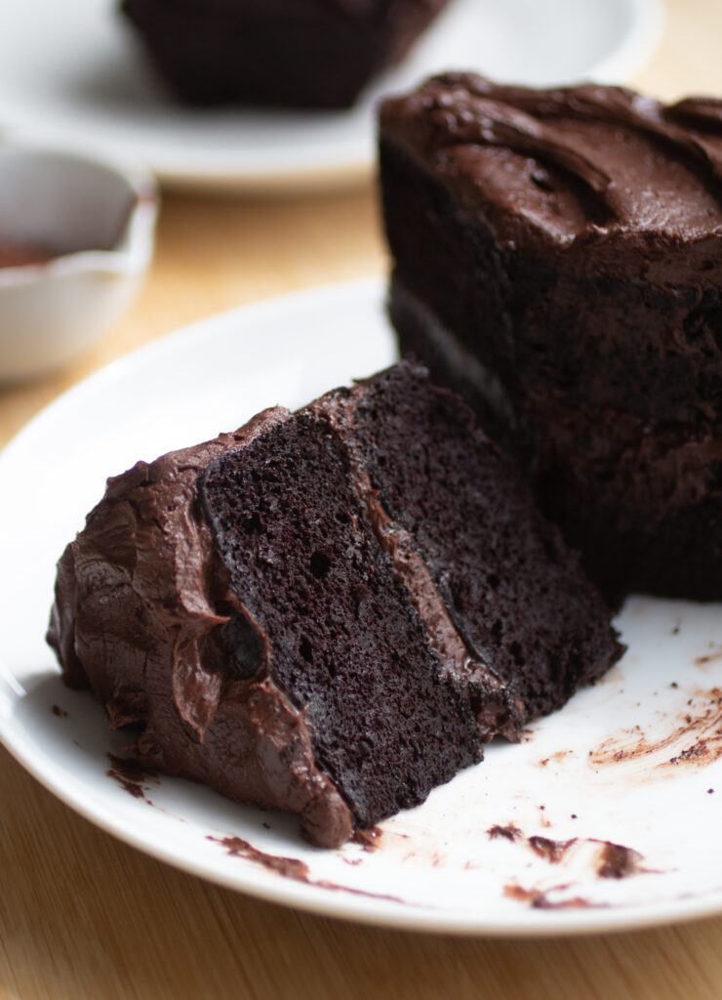

Home
Gluten Free Chocolate Cake

Description
This black bean chocolate cake is fudy, decadenbt, and completely gluten-free!
Ingredients
- Black Beans
- Granulated Sugar
- Eggs
- Butter
- Vanilla Extract
- Cocoa
- Baking Powder
- Baking Soda
Steps
- Preheat oven to 350F. Grease and line 2 6-inch round cake pans with parchment paper.
- In a high speed blender or food processor, puree the beans, sugar, oil, eggs and vanilla until completely smooth
- Add the cocoa powder, baking powder, and baking soda
- Divide batter equally into prepared pans and bake for 30-35 minutes